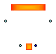

Package Content
Information
Extends from Interfaces.Air.PartialTwoPort_waxa (Partial two port waxa).
Parameters
| Type | Name | Default | Description |
|---|
| Volume | V | 0.001 | volume [m3] |
| Pressure | Pstart | 101325 | Initial moist air pressure [Pa] |
| Temperature | Tstart | 273.15 + 20 | Initial moist air temperature [K] |
| MassFraction | Xstart | 0.001 | Initial absolute umidity [kg_H20/kg_DA] [1] |
Connectors
Modelica definition
model AirVolume
extends Interfaces.Air.PartialTwoPort_waxa;
parameter Volume V = 0.001 ;
parameter Pressure Pstart = 101325 ;
parameter Temperature Tstart = 273.15 + 20 ;
parameter MassFraction Xstart = 0.001 ;
EEB.Media.Substances.MoistAir air(is4cap=true);
Mass Ma(stateSelect=StateSelect.avoid) ;
Mass Mv(stateSelect=StateSelect.avoid) ;
Energy Ea(stateSelect=StateSelect.avoid) ;
Pressure p(start=Pstart);
Temperature T(start=Tstart);
MassFraction X(start=Xstart);
Interfaces.Thermal.HeatPort heatPort;
equation
air.p = p;
air.T = T;
air.X = X;
Ma + Mv = V * air.d;
Mv = Ma * air.X;
Ea = Ma * (air.h - air.p / air.d);
der(Ma) = wa1 + wa2;
der(Mv) = wa1 *
actualStream(air_flange1.xa) + wa2 *
actualStream(air_flange2.xa);
der(Ea) = wa1 *
actualStream(air_flange1.ha) + wa2 *
actualStream(air_flange2.ha)
+ heatPort.Q_flow;
heatPort.T = T;
pa1 = air.p;
pa2 = air.p;
xaout1 = air.X;
xaout2 = air.X;
haout1 = air.h;
haout2 = air.h;
end AirVolume;
Parameters
| Type | Name | Default | Description |
|---|
| Volume | V | 0.001 | volume [m3] |
| Pressure | Pstart | 101325 | Initial moist air pressure [Pa] |
| Temperature | Tstart | 273.15 + 20 | Initial moist air temperature [K] |
| MassFraction | Xstart | 0.001 | Initial absolute umidity [kg_H20/kg_DA] [1] |
Connectors
Modelica definition

Information
Extends from Interfaces.Air.PartialTwoPort_waxa (Partial two port waxa).
Parameters
Connectors
Modelica definition
model AirVolumeWithWall_Condensing
extends Interfaces.Air.PartialTwoPort_waxa;
parameter Volume V = 1 ;
parameter Pressure Pstart = 101325 ;
parameter Temperature Tstart = 273.15 + 20 ;
parameter MassFraction Xstart = 0.001 ;
parameter HeatCapacity Cw = 50 ;
parameter ThermalConductance Gaw = 100 ;
EEB.Media.Substances.MoistAir air(is4cap=true);
EEB.Media.Substances.MoistAir wallsat;
Mass Ma(stateSelect=StateSelect.avoid) ;
Mass Mv(stateSelect=StateSelect.avoid) ;
Energy Ea(stateSelect=StateSelect.avoid) ;
Pressure p(start=Pstart);
Temperature T(start=Tstart);
MassFraction X(start=Xstart);
Temperature Tw(stateSelect=StateSelect.prefer) ;
MassFlowRate wc ;
HeatFlowRate Qawsens ;
HeatFlowRate Qawlat ;
Interfaces.Thermal.HeatPort heatPort;
equation
air.p = p;
air.T = T;
air.X = X;
Ma + Mv = V * air.d;
Mv = Ma * air.X;
Ea = Ma * (air.h - air.p / air.d);
der(Ma) = wa1 + wa2;
der(Mv) = wa1 *
actualStream(air_flange1.xa)
+ wa2 *
actualStream(air_flange2.xa) - wc;
der(Ea) = wa1 *
actualStream(air_flange1.ha)
+ wa2 *
actualStream(air_flange2.ha)
- Qawsens - Qawlat;
Cw *
der(Tw) = Qawsens + Qawlat + heatPort.Q_flow;
wallsat.p = p;
wallsat.T = Tw;
wallsat.phi = 1.0;
wc =
if air.X > 1e-6
and air.X > wallsat.X
then Gaw / air.cp * (air.X - wallsat.X)
else 0.0;
Qawsens = Gaw * (air.T - Tw);
Qawlat = wc * (air.hv - wallsat.hl);
air.T = heatPort.T;
pa1 = air.p;
pa2 = air.p;
xaout1 = air.X;
xaout2 = air.X;
haout1 = air.h;
haout2 = air.h;
end AirVolumeWithWall_Condensing;

Information
Extends from Interfaces.Air.PartialTwoPort_waxa (Partial two port waxa).
Parameters
| Type | Name | Default | Description |
|---|
| Volume | V | 10 | volume [m3] |
| Pressure | Pstart | 101325 | Initial moist air pressure [Pa] |
| Temperature | Tstart | 273.15 + 20 | Initial moist air temperature [K] |
| MassFraction | Xstart | 0.001 | Initial absolute umidity [kg_H20/kg_DA] [1] |
Connectors
Modelica definition
Parameters
| Type | Name | Default | Description |
|---|
| Volume | V | 0.001 | volume [m3] |
| Pressure | Pstart | 101325 | Initial moist air pressure [Pa] |
| Temperature | Tstart | 273.15 + 20 | Initial moist air temperature [K] |
| MassFraction | Xstart | 0.001 | Initial absolute umidity [kg_H20/kg_DA] [1] |
Connectors
Modelica definition
Automatically generated Mon Jun 1 16:09:25 2020.